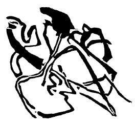
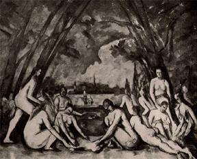

Piramit

Yolun farklı noktalarında bulunan sanat dallarının her biri, ifade etmekte en başarılı olduğu şeyi kendine özgü bir dille ortaya koyuyor. Aralarındaki farklılıklara rağmen -ya da belki bu farklılıklar sayesinde-, sanat dallarının bugün, ruhsal yaşantının bu geç safhasında olduğu denli birbirine yaklaştığı bir dönem olmamıştır.
Her atılım, soyuta, maddi olmayana ulaşma çabasının tohumlarını taşıyor. Sanatçılar, bilinçli ya da bilinçsiz olarak Sokratesin “kendini bil” sözüne uyuyorlar. Bilinçli ya da bilinçsiz bir şekilde, malzemelerini inceleyip deniyor, unsurların ruhsal değerleri arasında denge kurmaya çalışıyorlar.
Bu çabanın doğal sonucu olarak da farklı sanat dalları bir araya geliyor. Onlara en iyi öğretmen müziktir. Birkaç istisnaya rağmen müzik, kendini doğa olaylarının temsiliyle sınırlamamıştır, yüzyıllardır sanatçının ruhunu sesle ifade etmeye çalışmaktadır.
Temsillerle tatmin olmayan, içsel yaşantısını dışavurma özlemindeki bir ressam, günümüzün en maddi-olmayan sanatı olan müziğin, bu sonuca ulaşmaktaki serbestliğine ancak gıpta edebilir. Haliyle müziğin yöntemlerini kendi sanatına uygulamaya çalışır. Resimdeki, ritme, matematiksel ve soyut yapıya ya da tekrarlanan renklere yöneliş ve rengi harekete geçirme arzusu buradan çıkmaktadır.
Bir sanat dalının diğerinden yöntem ödünç alması, ancak ödünç alınan yöntem yüzeysel bir biçimde değil, temel olarak kullanılırsa başarıya ulaşabilir. Bir sanat dalı, öncelikle diğer sanat dallarının yöntemlerini nasıl kullandığını öğrenmelidir. Böylelikle bu yöntemler, ödünç alanın sanatına uygun bir şekilde aktarılabilir. Sanatçı, her yöntemi doğru uygulayabilecek güce sahip olduğunu, fakat bu gücü geliştirmesi gerektiğini unutmamalıdır.
Formun işlenmesinde müzik, resmin erişebileceğinin ötesinde sonuçlar elde edebilir. Öte yandan resim kimi açıdan müzikten ileridedir. Örneğin müziğin zamana bağlı bir düzeni varken, resim mesajını izleyiciye bir anda sunabilir.[22] Doğanın kısıtlayıcı bağlarından kurtulmuş gözüken müzik, kendisini ifade etmek için belirli bir forma ihtiyaç duymaz.[23] Bugün resim yalnızca doğal form ve fenomenlerin yeniden üretilmesiyle ilgileniyor. Resmin şimdiki görevi, gücünü ve yöntemlerini denemek, müziğin yıllar boyu yapmış olduğu gibi kendini bilmek ve gücünü sanatsal bir amaç uğruna kullanmaktır.
Farklı sanat dalları böylece kollarını birbirlerine uzatır. Bu kucaklaşmanın iyi şekilde değerlendirilmesi, gerçekten de muazzam bir sanat doğuracaktır. Sanatının ruhsal olanaklarında demlenen her insan, bir gün cennete ulaşacak olan ruhsal piramidin inşası için değerli bir yardımcıdır.
